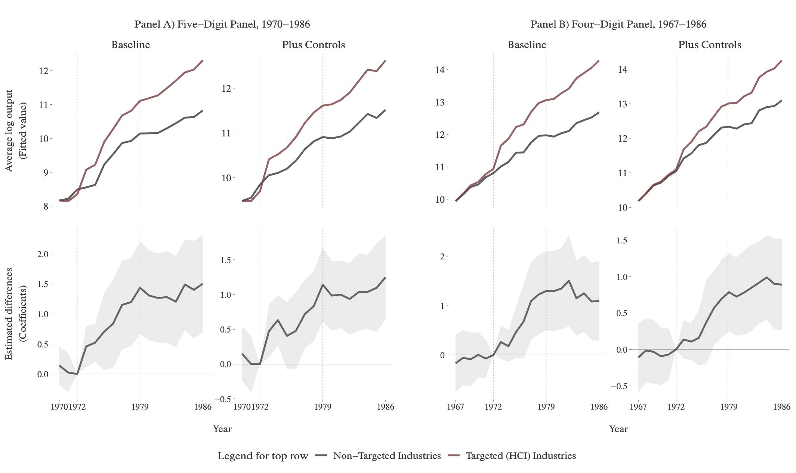
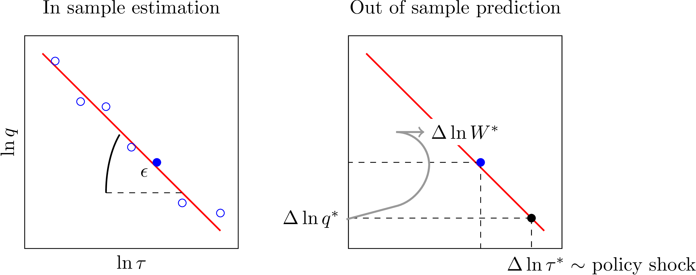

New Industrial Policy
Ahmad Lashkaripour (Indiana University, CESifo, CEPR)
Po-Shyan Wu (Indiana University)
Oxford Research Encyclopedia of Economics and Finance · 2025
Read PDF · Markdown source · Reader view
Abstract. Industrial policy, once dismissed as a relic of mercantilism, has reemerged in response to geopolitical tensions, environmental crises, and skepticism about unregulated markets. Advocates highlight its potential to address market failures arising from scale economies, market power, and externalities, while critics caution that real-world effectiveness remains uncertain. This essay develops a framework suited to today's globally integrated economies, where industrial policy must balance domestic gains with unintended international consequences, especially in areas like climate change. It reviews both retrospective evaluations of past policies, such as South Korea's HCI drive and China's interventions, and forward-looking, model-based analyses estimating potential gains from optimal policy design. Evidence suggests that while some historical cases highlight successes, the broader record is mixed, with outcomes often complicated by spillovers and global integration. In a world of deep interdependence, unilateral efforts appear less likely to replicate past successes, strengthening the case for regional or international coordination in industrial policy.
Summary
Once dismissed as a relic of mercantilist economic thinking, industrial policy has made a notable comeback. The return of industrial policy is propelled by rising geopolitical tensions, escalating environmental crises, and growing doubts about the efficiency of unregulated markets. Proponents of industrial policy argue that government interventions can address market failures due to scale economies, market power, and environmental externalities. This resurgence, however, warrants critical examination.
The conventional argument against industrial policy is grounded in the First Welfare Theorem, which asserts that in a neoclassical setting, marked by perfect competition, no externalities, and frictionless markets, market forces alone would yield efficient outcomes. In practice, however, the economy deviates markedly from this theoretical benchmark. Various frictions and externalities prevent real-world economies from operating on the production possibility frontier, thereby providing an economic rationale for industrial policy interventions. Nonetheless, the effectiveness of government efforts to correct these market failures remains a subject of ongoing debate.
This essay embarks on a critical exploration of industrial policy, starting with a theoretical framework tailored to the realities of modern day economies. Today’s economies are internationally integrated and operate within complex and expansive supply chains. And industrial policies are no longer limited to domestic issues but also target international issues and global market failures, such as climate change. An important theme emphasized in this review is that policymakers must navigate a delicate balance between domestic welfare gains and unintended global consequences, even when policy measures are designed primarily to correct failures within the domestic economy.
The theoretical framework provides a foundation for critically examining recent empirical evidence on the outcomes of industrial policy. We begin by analyzing retrospective, design-based evaluations of past industrial policy initiatives, such as South Korea’s Heavy and Chemical Industry (HCI) drive and the varied interventions pursued by China. Subsequently, we discuss a newer strand of research employing forward-looking, model-based methods. This work utilizes structural models, grounded in empirically estimated parameters, to forecast the potential gains from optimal or constrained-optimal policies.
Overall, the existing literature presents a nuanced evaluation of industrial policy. Historical episodes like South Korea’s HCI drive are often cited as examples of success, with the balance of evidence providing some support for this view. However, when unintended consequences are fully accounted for, the overall effectiveness of such policies becomes more ambiguous. Moreover, today’s heightened global economic integration introduces new complexities for implementing industrial policy. In an era of heightened trade integration, it is increasingly uncertain whether unilateral policy actions can replicate the outcomes achieved in the past. Recent studies underscore the growing importance of coordinated efforts, at least at the regional level—a view reverberated by the recent Draghi report on EU competitiveness.
Preliminaries
Definition: What is Industrial Policy?
Industrial policy (IP) is the deliberate attempt to influence the composition of the economy by reallocating resources across sectors or activities. This typically involves altering the way labor, capital, and other inputs are distributed within and between industries. What makes industrial policy distinct is that it is not just about setting the rules of the game—it is about making deliberate choices about resource allocation. The government says, “We want more of X and not Y,” though the “not Y” part is often left unsaid.
The Textbook Justification for Industrial Policy
To set the stage for the following sections, we begin with the standard textbook argument for industrial policy using a simple framework with minimal structure. Consider a closed economy where a fixed supply of labor, \(L\), is allocated across \(I\) industries, indexed by \(i=1,\dots,I\). The representative household has preferences given by \(U(q)\), where \(q=\{q_{1},\dots,q_{I}\}\).
Production in industry \(i\) follows a technology \(q_{i}=F_{i}(L_{i})\), subject to the labor constraint \(\sum _{i}L_{i}=L\). The value marginal product of labor (VMPL) in industry \(i\) is given by
Under the efficient allocation, \(\left (q^{*},L^{*}\right )\), the VMPL is equalized across industries, so that
where \(w^{*}\) is the shadow price of labor under the resource constraint. Under a market equilibrium allocation, \((\bar {q},\bar {L})\),
however, VMPL may vary across industries. This discrepancy provides the basis for government intervention: if \(\text{VMPL}_{j}>\text{VMPL}_{i}\),
welfare can be increased by reallocating labor from industry \(i\) to industry \(j\). This reallocation can be
implemented by subsidizing or taxing labor or output in each industry according to the wedge, \(\text{VMPL}_{i}/w^{*}\). This
is the textbook justification for industrial policy. The underlying distortion arises because industry \(i\)
effectively faces a different labor cost than the efficient benchmark, leading to misallocation. Various
market failures can drive this wedge, but in this article we focus on three sources reviewed below.
(a) External economies of scale. \(\quad\) For many activities, when a firm expands production or enters a market, it creates
benefits for society (\(\frac {\partial U}{\partial q_{i}}\)) that are not captured in the market price (\(p_{i}\)). These social benefits might come from knowledge
spillovers or consumers’ love for variety. Since firms base their decisions on market prices, they often overlook
these broader benefits, leading to under-production in industries with high external returns to scale (or in
industries with a high wedge, \(\text{VMPL}_{i}/w^{*}\sim \frac {\partial U}{\partial q_{i}}/p_{i}\)). In such cases, steering resources toward these industries can boost overall welfare.
(b) Environmental externalities. \(\quad\) When production generates carbon emissions or pollution, it imposes a
negative externality that is not accounted for in the market price, \(p_{i}\). This introduces a wedge between
marginal utility and price, \(\frac {\partial U}{\partial q_{i}}/p_{i}\sim \text{VMPL}_{i}/w^{*}\), leading to excessive output in pollution-intensive industries. In such cases,
redirecting resources away from these industries toward cleaner alternatives can improve overall welfare.
(c) Market power. \(\quad\) The equalization of VMPL across activities requires that the marginal rate of substitution between
goods (\(\frac {\partial U}{\partial q_{i}}/\frac {\partial U}{\partial q_{j}}\)) matches the marginal rate of transformation (\(\frac {\partial F_{j}}{\partial L_{j}}/\frac {\partial F_{i}}{\partial L_{i}}\)). Any markup or markdown on output or input prices
beyond actual costs distorts this condition, leading to variation in VMPL across industries. Markups on marginal
cost typically arise from output market power—monopoly or oligopoly—while markdowns on input prices reflect
market power in input markets, such as monopsony or oligopsony in labor and materials markets. In this article,
we focus on the former.
The above list is not exhaustive.Discrepancies in VMPL may also arise from within-firm agency problems (internalities) or frictions in insurance and credit markets. However, whether these issues fall within the scope of industrial policy remains ambiguous. Notably, it omits dynamic external economies of scale through learning-by-doing, which are at the core of infant industry protection arguments. Corden (1997) offers a comprehensive textbook treatment of the infant industry protection under dynamic returns to scale. Furthermore, the above list overlooks coordination failures emphasized by Rosenstein-Rodan (1943) and more recently revisited by Garg (2025). Acknowledging these omissions, the next section presents a quantitative model that incorporates the market failures listed above, while allowing for economic features such as trade integration and complex supply chains, which are the cornerstones of modern industrial production.
A Modern Framework for Policy Evaluation
Modern economies are characterized by extensive trade integration and highly developed supply chains. Today’s production processes often span multiple countries and involve several stages, creating intricate networks of economic interdependence. Additionally, contemporary industrial policy increasingly prioritizes environmental objectives, commonly referred to as green industrial policy. As a result, an effective industrial policy framework for the modern era must explicitly incorporate the following:
- Input-output linkages, through which changes in one sector can propagate widely across industries and national economies.
- International externalities, where policy decisions in one country influence trade conditions and economic outcomes elsewhere.
- Environmental objectives, which motivate resource reallocation toward more sustainable and environmentally friendly activities.
In the following sections, we develop a unified conceptual framework that synthesizes recent contributions from Caliendo and Parro (2015), Baqaee and Farhi (2020), Lashkaripour and Lugovskyy (2023), and others, incorporating the key features outlined above. We begin with a closed-economy model and later extend our analysis to an open-economy framework that accounts for international spillovers.
Closed Economy Framework
Consider a closed economy producing \(I\) goods, indexed by \(i=1,\ldots,I\). Each good \(i\) is subject to an ad valorem subsidy \(\tau _{i}\), with a negative subsidy, \(\tau <0\), denoting a tax.
Final Demand
The representative household maximize a constant-returns utility aggregator
subject to a budget constraint,
where \(p_{i}\) is the base (pre-tax) price of good \(i\), \(w\) is the wage rate, \(L\) is total labor endowment, \(T\) represents net lump-sum tax rebates from the government to the consumer, and \(\pi _{i}\) represents the profits collected by the producer of good \(i\). Optimal consumption choices are summarized by final expenditure shares:
Production
Good \(i\) is produced using a composite input which bundles labor and intermediate inputs. The unit cost of the composite inputs is represented by a homogeneous of degree one function, \(\mathcal {C}_{i}\left (w,\left \{ (1-\tau _{j})p_{j}\right \} \right )\), where \(p_{j}\) is the pre-tax price of intermediate input \(j\). Production exhibits increasing returns to scale via a productivity term \(A_{i}\):
where \(\mu _{i}\geq 1\) is the markup over marginal cost, and \(\psi _{i}\) is the industry-level scale elasticity. If \(\psi _{i}>0\), as production scale \(q_{i}\) increases, the effective productivity \(A_{i}\) rises, capturing increasing returns due to entry or knowledge spillovers. Total output \(q_{i}\) is allocated to final consumption and intermediate input use:
where \(m_{ij}\) denotes the intermediate demand for good \(i\) used in the production of good \(j\). We assume that the input output shares, \(\Omega _{ij}=\frac {p_{i}m_{ij}}{\frac {1}{\mu _{j}}p_{j}q_{j}}\), are constant, with \(\Omega\) denoting the \(K\times K\) input-output matrix. Per cost minimization, the labor input per industry satisfies \(L_{i}=\left (1-\sum _{j}\Omega _{ji}\right )^{-1}\frac {1}{\mu _{i}}p_{i}q_{i}\).
General Equilibrium and Social Welfare
Given productivities,\(\bar {A}_{i}\), scale elasticities, \(\psi _{i}\), markups, \(\mu _{i}\), and tax-cum-subsidy rates, \(\tau _{i}\), a general equilibrium consists of
prices, \(p_{i}\), wage rate, \(w\), intermediate inputs, \(m_{ij}\), labor inputs, \(L_{i}\), outputs, \(q_{i}\), and final demands \(c_{i}\), such that: each producer
minimizes costs and sets prices by applying a markup to marginal cost; final demand is determined by maximizing
utility subject to the budget constraint, with profits and wedge revenues rebated as lump sums; and supply and
demand balance in all goods and factor markets.
Welfare.—\(\quad\) Suppose production or consumption of each good \(i\) generates an environmental externality cost \(\delta _{i}\,q_{i}\) that is taken as given by consumers. So, in addition to standard consumption utility \(C\), the social welfare function includes the disutility from environmental externalities, and is given by:
For instance, \(\delta _{i}\) could represent the amount of emissions embedded in one unit of good \(i\) times the social cost of the emissions.
Welfare Gains from Piecemeal Industrial Policy
We begin by considering a piecemeal IP intervention starting from the market allocation under laissez-faire (\(\tau _{i}=0\)). The piecemeal IP intervention is described by small change to all the industry-specific tax-cum-subsidies:
Examining piecemeal interventions is valuable as it reveals where interventions yield the greatest marginal returns. Later, we explore optimal policy interventions, which often involve larger policy chnages. The piecemeal policy change has the following effect on welfare, evaluated at the laissez-faire baseline \(\tau =0\):
Here \(\omega _{i}\) denotes the revenue-based Domar weight, which represents the network centrality of industry \(i\). Namely,
where \(Y=wL+\sum \pi _{i}=\sum _{i}p_{i}c_{i}\) is net consumption income. In the absence of excess markups (\(\mu =1\)) the revenue-based Domar weight coincides with the cost-based weight defined as, \(\tilde {\omega }_{i}=\sum _{j}\Psi _{ij}\beta _{j}\), where \(\Psi _{ij}\) is the entry \(\left (i,j\right )\) of the Leontief inverse \(\Psi =\left (I-\Omega \right )^{-1}\). The composite wedge \(\phi _{i}\) encompasses the inefficiency wedge introduced by scale economies, market power, and environmental externalities:Here, \(\mu _{i}\) corresponds to the excess markup. This distinction is important: for instance, in the Krugman model with free entry firms charge a markup the profits from which cover the sunk entry cost. In that case, there is no excess markup, i.e., \(\mu _{i}=1\).
Notice that if there are no externalities or markups, i.e., \(\delta _{i}=\mu _{i}-1=\psi _{i}=0\), then \(\phi _{i}=0\). In that case, the market allocation is already efficient, and policy changes do not improve welfare, echoing the logic of the First Welfare Theorem.
On the other hand, once there are nonzero markups or externalities, the expression in 1 tells us that shifting production away from industries with smaller wedge, \(\phi _{i}\), and toward industries with larger \(\phi _{i}\) can generate welfare gains, and that these local gains could be amplified if the growing industry is more upstream or central as measured by its Domar weight. It is perhaps this observation about local policy effects that motivates the popular belief that high-centrality industries (in terms of input-output connections) deserve special treatment when designing industrial policy interventions. But as we show next, the optimal policy itself is independent of the industry’s position in the production network.
Optimal Industrial Policy
Let us now describe how the optimal tax or subsidy. For this we can leverage the first-order condition with respect to policy instrument \(\tau =\{\tau _{j}\}\). which is
Solving for the optimal policy \(\{\tau _{i}^{*}\}\) yields:
Thus, the optimal industrial policy is network-blind and demand-blind. It is a subsidy equal to each industry’s composite wedge, \(\phi _{i}\). While input-output connections influence how the effect of the subsidy, \(\tau _{i}\), spills over to different industries, the final expression for the optimal subsidy rate in industry \(i\) is simply \(\phi _{i}\).
While the optimal tax or subsidy in each industry depends only on the distortion wedges, the magnitude of welfare gains from optimal intervention depends on other features of the economy. To a first-order approximation, the welfare gains from optimal policy are described by
indicating that if the more-distorted (high-\(\phi\)) industries have greater network centrality (exhibit a larger Domar weight) the gains from restoring allocative efficiency via optimal policy will be higher. Likewise, the underlying demand or substitution elasticity shape the gains from optimal policy as they directly influence \(\frac {\partial \ln q_{i}}{\partial \ln \left (1-\tau _{j}\right )}\).
Second-Best: Optimal Industrial Policy with Limited Targeting
Many real-world industrial policy episodes have limited scope, targeting only a subset of industries (e.g., e.g., heavy chemical industries in South Korea, or solar panels in China). The calculus of optimal policy is slightly different in these cases. To make this point formally, consider as second-best scenario where the government can target only a subset of industries,
In this case, the first-order condition (Equation 2) implies that the optimal policy in targeted industries satisfies
The first term is the wedge while the second accounts for spillover to other goods, since a policy on good \(i\in \mathbb {T}\) can mitigate or exacerbate the distortion vis-à-vis a non-targeted industry \(i'\in \mathbb {I}-\mathbb {T}\). The logic is that reallocation among the non-targeted industries, \(\mathbb {I}-\mathbb {T}\), has first-order effects on welfare provided that the initial allocation is inefficient among these industries.
Taking Stock
Our theoretical model reveals two basic points about the optimal policy design and policy impacts. The first result is that as long as the government can implement separate taxes or subsidies for each good \(i\), the optimal policy is to offer a subsidy equal to the distortion wedge, \(\tau _{i}^{*}=\phi _{i}\). The optimal policy design is, thus, independent of the underlying elasticity of substitution between goods or the centrality of the subsidized good in the supply chain.
Remark 1
The optimal industrial policy is network-blind and independent of substitution patterns between industries. Rather, the optimal subsidy is determined solely by the size of the distortion wedge (the scale elasticity, excess markup, or pollution per unit of output).
As previously noted, this result pertains to first-best scenarios in which the government can directly intervene in all industries or correct all economic distortions. In practice, industrial policies typically target only a limited number of industries, such as heavy chemicals in South Korea or solar panels in China. Under these conditions, optimal policy depends on the upstream position of targeted industries and the degree of substitutability between industries. This is because policy effects spill over into non-targeted sectors, potentially generating first-order welfare impacts if those sectors already face their own distortions. These considerations likely explain why actual policy interventions often prioritize upstream industries with extensive linkages to the economy. Liu (2019), reviewed later in this essay, develops a formal framework for studying these spillover effects.
Another key observation is that the gains from optimal policy depend on the economy’s underlying demand and input-output structure. These gains are greater when distortions affect industries that are more upstream or central, and when the elasticity of substitution between industries is high.
Remark 2
The gains from optimal industrial policy depend on the network centrality and demand elasticity of target industries. Optimal IP would deliver larger gains if the targeted industries (with the highest wedges) are more central in the input-output network or if the demand facing them is more elastic.
This remark matters because industrial policy often involves administrative expenses beyond just subsidy costs. Generally speaking, taxing households to finance industrial subsidies reduces economic efficiency. But these efficiency losses could be avoided if subsidies for some industries were funded by taxing others, making the policy revenue-neutral. Another concern is administrative waste—funds may get diverted, or industries may engage in rent-seeking, consuming resources without contributing real value. Our current model ignores these issues. Once we account for administrative and rent-seeking costs, the the magnitude of the gains from optimal industrial policy become crucial in deciding whether the policy makes economic sense.
Open Economy Framework
In open economies, the industrial policy calculus becomes more complex. Domestic interventions can reduce the gains from trade or transfer resources from the home economy to others. For example, when a government subsidizes its auto industry, foreign consumers effectively collect part of the subsidy through lower-priced exported cars. Such policies also distort the relative price between domestic and imported vehicles, shifting the terms of trade. As a result, the gains from trade may shrink for the home country. Or the resulting terms of trade effects could harm trade partners. Indeed, critics argue that many industrial policies are simply disguised protectionism.
Preliminaries
To conceptualize these issues, we extend the closed economy model presented earlier, allowing the country to both import and export good \(i\). More specifically, the utility \(U\left (C_{1},...,C_{I}\right )\) now aggregates over composite consumption bundles, \(C_{i}=C_{i}(c_{i},\tilde {c}_{i})\) that are aggregates of domestic varieties, \(c_{i}\), and foreign varieties, \(\tilde {c}_{i}\). likewise, \(M_{ij}=M_{ij}\left (m_{ij},\tilde {m}_{ij}\right )\). Assume that the final and input demand aggregators \(C_{i}\left (.\right )\) and \(M_{ij}\left (.\right )\) have a CES parameterization that admits the same price index, \(P_{i}=P_{i}\left (p_{i},\tilde {p}_{i}\right )\). More specifically, absent policy wedges,
where \(\epsilon _{i}\) is the trade elasticity in industry \(i\), which represents the degree of substitutability between domestic and foreign varieties in that industries. Define net exports for good \(i\) as:
where \(P_{i}C_{i}=p_{i}c_{i}+\tilde {p}_{i}\tilde {c}_{i}\) denotes total consumption expenditure on good \(i\) summed over domestic and foreign varieties and \(P_{i}M_{ij}=p_{i}m_{ij}+\tilde {p}_{i}\tilde {m}_{ij}\) likewise denote intermediate input expenditure by suppliers of good \(j\). Let \(\lambda _{i}\) be the domestic expenditure share, calculated as:
In other words, out of the total spending \(P_{i}[C_{i}+\sum _{j}M_{ij}]\) on good \(i\), the fraction \(\lambda _{i}\) goes to domestic varieties, while the rest is spent on foreign varieties.
International Spillovers and Terms-of-Trade Effects
Equation 1 described the welfare effects of an incremental industrial policy reform \(\left \{ d\ln (1-\tau _{i})\right \}\) starting from laissez-faire in a closed economy. Building on Lashkaripour and Wu (2025), the domestic welfare effects of the same policy in an open economy setting are given by:
As before, \(\omega _{i}\) is the Domar weight, which is equal to \(\sum _{j}\Psi _{ij}\beta _{j}\) here, with \(\Psi _{ji}\) denoting the entry \(\left (j,i\right )\) of the Leontief inverse, and \(\beta _{i}\) representing the consumption share on good \(i\).
Openness to trade introduces two additional welfare effects. First, industrial policy can modify the gains from trade by distorting the relative price between the domestic and foreign varieties of good \(i\) (i.e., the terms of trade). If these effects contract imports and raise the domestic market share \(\lambda _{i}\) in high-centrality sectors with low trade elasticities, they erode the gains from trade following the logic of Arkolakis, Costinot, and Rodríguez-Clare (2012). Second, subsidies can cause a siphoning effect, whereby domestic taxpayers inadvertently finance foreign consumption through subsidized exports. When subsidies target export-oriented industries (those with high \(\chi\)), these transfers intensify. Importantly, such direct transfers constitute a pure welfare loss for the implementing country.
Setting aside these additional effects, the responsiveness of resource allocation, \(d\ln q_{i}\), is also shaped by trade openness—a point emphasized by Bartelme et al. (2025). In a closed economy with low substitutability across industries, inelastic domestic demand limits the extent of resource reallocation, as formalized earlier. Trade, however, partially relaxes this constraint, particularly for smaller countries where it enables significant decoupling between domestic demand and production.
For these reasons, optimal policy in open economies is more complicated than merely correcting distortions wedges.Campolmi, Fadinger, and Forlati (2024) and Macedoni and Weinberger (2025) also study the international spillovers from domestic subsidies. Below, we dig deeper into this issue, examining various optimal policy scenarios. We begin by introducing additional trade policy instruments that regulate trade flows.
Trade Policy Instruments
The open economy model introduces additional prices, providing governments with further instruments to influence the prices of internationally traded goods. We concentrate here on two standard instruments of trade policy: import tariffs and export subsidies, represented as follows:
Import tariffs impose taxes on foreign-produced goods purchased domestically by firms and households. Export subsidies provide financial advantage to domestically produced goods sold in international markets. When both industrial subsidies and trade instruments are applied, consumers encounter the following prices:
- Domestic consumers pay \((1-\tau _{i})p_{i}\) for domestically produced varieties of good \(i\).
- Foreign consumers pay \((1-\tau _{i})(1-x_{i})p_{i}\) for domestically produced goods exported abroad.
- Domestic consumers pay \((1+t_{i})\tilde {p}_{i}\) for imported foreign goods.
Finally, the net lump-sum rebate \(T\) combines all revenues from industrial subsidies, import tariffs, and export subsidies. If the total policy involves net subsidies, then \(T<0\), indicating that domestic consumers ultimately bear the financial burden.
Efficient Policy from a Global Standpoint
We begin our optimal policy analysis by outlining the efficient policy from a global standpoint—one that maximizes a weighted sum of global welfare subject to the availability of lump-sum transfers between countries. As explained in Lashkaripour and Lugovskyy (2023), the efficient policy consists solely of subsidies equal to distortion wedges, with zero trade measures implemented worldwide. Specifically,
Thus, in terms of tax and subsidy measures, this policy mirrors the optimal or efficient policy in the closed economy setting. However, as noted earlier, corrective subsidies generate international externalities and terms-of-trade effects, benefiting some countries at the expense of others. The inter-country transfers that supplement optimal taxes/subsidies address these international externalities and redistribute the welfare gains based on the Pareto weights assigned to each country.
Unilaterally Optimal Policy for Open Economies
Next, we consider the optimal policy chosen by a country acting unilaterally to maximize its own welfare, taking as given the policy decisions made by the rest of the world. Lashkaripour and Lugovskyy (2023), Bartelme et al. (2025), Demidova et al. (2024), and Farrokhi, Lashkaripour, and Pellegrina (2024) provide a full characterization of unilaterally-optimal policies in this scenario under various forms of distortion. Drawing on Theorem 1 from the first of these studies, we note that the optimal policy for a small open economy consists of trade-blind subsidies aimed specifically at correcting distortions, alongside uniform tariffs and export subsidies chosen strategically to improve the terms of trade.A small open economy is a country with an infinitesimal share in world markets, as in Alvarez and Lucas Jr (2007). In a neoclassical framework with homogeneous traded goods, such an economy has no influence on world prices. With international product differentiation, even a small open economy has market power, making its unilaterally optimal trade taxes different from zero. Formally, we can express the unilaterally-optimal policy as follows:The above equation assumes away environmental externalities, setting \(\delta _{i}=0\). Accounting for these externalities, the optimal trade policy includes a border adjustment that corrects these externalities. See Farrokhi and Lashkaripour (2025) for further details.
To elaborate, the unilaterally optimal policy includes a uniform tariff, \(\bar {t}\), and and export subsidy proportional to the trade elasticity, \(\epsilon _{i}\). There is an indeterminacy in the optimal trade policy, consistent with the Lerner symmetry (Lerner 1936). For instance, the optimal policy could consist of no tariff and good-specific export taxes or a high tariff paired with good-specific export subsides. Understanding the logic of policy is easiest in the former. The central government can use export taxes to extract additional surplus from foreign consumers, given that home has unexploited monopoly over the domestically produced variety of good \(i\), the extent of which depends on \(\epsilon _{i}\).
When compared to the efficient policy, it becomes clear that unilaterally optimal tariffs and export subsidies are inefficient beggar-thy-neighbor policies. Meanwhile, the unilaterally optimal industrial subsidies are terms-of-trade blind, echoing the targeting principle: when industry-level subsidies are feasible, there is no valid economic rationale for resorting to import restriction or export promotion to correct inter-sectoral resource misallocation. Yet in practice, governments frequently face constraints that prevent them from implementing precisely targeted industrial subsidies. We now turn our attention to such scenarios, examining cases where constraints on policy space may lead governments to adopt trade interventions as second-best instruments.
Import Restriction and Export Promotion as Industrial Policy
In many real-world scenarios, governments are unable to implement widespread industrial subsidies to correct sectoral misallocations. This limitation often stems from political and fiscal constraints. Funding industrial subsidies requires taxing households or firms in non-targeted industries, which can provoke political opposition. Face with such constraints, governments may resort to import taxes and export subsidies to pursue their industrial policy objectives, as these measures are more politically feasible (Rickard 2025).
Here, the constrained unilaterally-optimal policy comprises import tariffs \(t_{i}^{**}\) and export subsidies \(x_{i}^{**}\), designed to maximize domestic welfare, given the constraint that domestic industrial subsidies are unavailable (\(\tau _{i}=0\) for all \(i\)). Following Theorem 2 from Lashkaripour and Lugovskyy (2023), the optimal second-best trade policy is characterized formally as:
where \(t_{i}^{*}\) and \(x_{i}^{*}\) represent the unconstrained unilaterally-optimal trade
policies, which exclusively target terms-of-trade improvements.The above formula applies to an economy without input-output connections. Antràs et al. (2024) and Caliendo, Feenstra, et al.
(2023) provide a theoretical characterization of optimal trade policies in two-country, two-good models with vertical and roundabout
production. In summary, optimal second-best trade
measures limit imports and encourage exports in sectors exhibiting high distortion wedges. By directing
resources toward these sectors, the policy mimics efficient subsidies and enhances allocative efficiency.
Can trade measures be an effective industrial policy? While this question is ultimately empirical, theory offers some
clues. Second-best trade measures jointly optimize over two policy objectives: terms-of-trade improvements and
correcting sectoral misallocations. However, tensions between these goals may arise, reducing overall policy
effectiveness. Lashkaripour and Lugovskyy (2023) illustrate this tension through a standard Krugman framework
in which distortions directly relate to trade elasticities, specifically as \(\phi _{i}=\frac {1}{1+\epsilon _{i}}\). They show that in the extreme case of a small
economy (\(\lambda _{i}=0\) for all \(i\)), the optimal second-best policy yields a uniform protection rate across industries, as captured by
the product of the import tariff and export subsidy: \(\left (1-x_{i}^{**}\right )\left (1+t_{i}^{**}\right )=1-\left (1+\frac {1}{\bar {\epsilon }}\right )\). This outcome reveals a critical constraint: in balancing
misallocations improvements against terms-of-trade goals, the government effectively abandons efforts to
influence sector-specific resource allocation. The reason for this is straightforward: boosting production in
high-return industries increases the domestic expenditure share, thereby dissipating the gains from trade.
These competing effects precisely offset each other, leaving no clear economic rationale for sectoral
reallocation. We revisit this issue later, when we review the empirical literature on industrial policy
effectiveness.
Taking Stock
In open economies, unilateral industrial policy inevitably distorts international relative prices, generating cross-country spillover and spill-back effects. For example, subsidizing domestic industries shifts income from domestic tax payers, who finance these subsidies, to foreign consumers via reduced export prices. Such transfers represent a net loss for the country implementing the policy. Industrial policies can also influence the terms of trade in the traditional sense: if a country’s terms worsen, its national welfare declines; if they improve, its international partners will bear the losses.
Accordingly, unilaterally optimal industrial policy in an open economy pursues two objectives. First, it seeks to restore allocative efficiency domestically. Second, it aims either to improve the terms of trade and extract surplus from foreign partners, or, if such improvement is unattainable, to mitigate the terms of trade losses. Unless the government has limited policy options, the first objective is best pursued through conventional domestic subsidy measures, and the second through standard trade measures.
Remark 3
Using trade restrictions to correct misallocation across industries is rarely the optimal policy choice, even for a non-cooperative government solely focused on domestic welfare. The unilaterally optimal trade policy for such a government is generally distortion-blind. However, when conventional industrial policy measures are unfeasible, trade restrictions may serve as a second-best alternative.
It is conceivable that certain situations might warrant using trade policy as a first-best corrective measure. Yet, even in these uncommon scenarios, the appropriate approach would be to promote trade rather than restrict it. The rationale here is that the economy may suffer from trade-specific wedges, such as information barriers that hinder exports, leading to suboptimal export levels. In such cases, export subsidies could effectively mitigate the inefficiency. However, historical instances of trade measures employed as industrial policy often involve trade restrictions aimed at supporting entire industries, not solely enhancing export activities. The above remark speaks to these instances.
While the issue of targeting pertains specifically to trade instruments, we also identified a broader tension that can undermine industrial policy effectiveness more generally. This tension arises because maximizing the gains from trade may conflict with improving allocative efficiency domestically. Achieving larger trade gains requires redirecting domestic resources from industries with low trade elasticities toward those with high elasticities. Meanwhile, improving resource allocation entails shifting resources from sectors with smaller distortion wedges to those with larger ones. In theory, these objectives can conflict, limiting policy effectiveness. As reviewed later in this essay, empirical estimates of distortion wedges and trade elasticities indicate that this conflict is quantitatively important. Even domestic subsidies that are perfectly targeted to correct distortionary wedges can, if applied unilaterally, erode the gains from trade to the point of producing immiserizing welfare effects. This tension presents a crucial dilemma for industrial policy implementation in open economies.
Remark 4
Trade openness poses a dilemma for industrial policy. On the one hand, it amplifies policy gains by facilitating resource reallocation across sectors, as domestic production becomes less tied to domestic demand. On the other hand, it introduces a trade-off: domestic price interventions aimed at restoring allocative efficiency inevitably distort international relative prices, thereby diminishing the gains from trade.
This dilemma is especially relevant for smaller countries that are more reliant on trade. A potential remedy is for these countries to coordinate policies within free trade blocs or with major trading partners—a solution that several studies examined later in this essay explore. The logic behind coordination is straightforward: when countries implement subsidies unilaterally, they distort international relative prices and diminish the gains from trade as a result. However, if all partners adopt identical subsidy schedules, international price ratios remain intact and the gains from trade are preserved.
The New Empirics of Industrial Policy
In this section we review the new wave of research evaluating industrial policy outcomes. These studies fall into two main categories:
- Ex post policy evaluations: These studies focus on specific policy episodes (usually narrow in scope) and often apply research design-based empirical methods (e.g., difference-in-differences) to estimate the causal impact on observable outcomes. However, several recent papers have adopted a more structural approach to ex post policy evaluation borrowing from advances in the industrial organization and trade literature.
- Ex ante measurement of optimal policy outcomes: These involve estimating distortion wedges and relevant elasticities and plugging them in general equilibrium models, like the one described above, to quantify potential gains from optimally designed policies.
Ex post studies have a straightforward interpretation: they measure past policy effects. Ex ante studies, on the other hand, often get misinterpreted. It is often assumed that these models are only useful if we believe governments can—or will—implement policies optimally. But that is the wrong way to think about them. Ex ante evaluations do not predict what governments will do; they define the best possible outcomes under ideal design. If that policy frontier is constrained, it tells us something important about what is feasible. For example, several papers reviewed in this essay find that even optimally designed second-best trade policies do not work well as industrial policy. That suggests the trade policy frontier itself is limited, regardless of whether policymakers pick the “optimal” option. If the best-case scenario is still bad, perhaps it is a sign that governments should steer clear of those policies altogether.
Ex Post Policy Evaluations
The first wave of empirical research on historical industrial policies relied on cross-sectional regressions, yielding mixed results regarding their economic impact (Harrison and Rodríguez-Clare (2010) and Pack and Saggi (2006)). A common critique of this literature is that such regressions cannot establish causal policy effects due to identification challenges—most notably endogenous policy selection and reverse causality, as discussed in Lane (2020) and Juhász, Lane, and Rodrik (2023).
A second generation of research sought to overcome some of these limitations by focusing on policy interventions in narrowly defined industries, using time-series data. Notable examples include Head (1994) on the U.S. steel rail industry and Irwin (2000) on the tinplate sector. Head (1994), in particular, complements the time-series analysis with a structural model to conduct counterfactual simulations, further isolating the causal impact of industrial policy measures.
More recently, a third generation of studies has emerged that continues to examine narrowly defined policy episodes, but does so using finer cross-sectional data coupled with more sophisticated empirical designs such as difference-in-differences, regression discontinuity, and hybrid methods. Compared to the first generation, these studies offer clearer estimates of causal effects from historical industrial policy interventions. This approach has gained increasing popularity, reflecting broader methodological trends within the profession. Before reviewing this emerging body of research, it is important to discuss a few empirical challenges that continue to persist.
Measurement and Identification Challenges
Evaluating industrial policy involves two primary challenges: measurement and identification. The first challenge
is selecting an appropriate metric for policy assessment. A welfare-enhancing policy reallocates resources from low
to high value marginal product of labor (VMPL) activities, where \(\text{VMPL}_{i}=p_{i}\frac {\partial F_{i}\left (.\right )}{\partial L_{i}}\). However, VMPL is not directly observable and
often differs from measurable metrics like marginal revenue product or value added per worker—i.e., \(\text{VMPL}_{i}\neq \frac {\partial \left (p_{i}F_{i}\left (.\right )\right )}{\partial L_{i}}\neq \frac {p_{i}q_{i}}{L_{i}}\).
Consequently, policy evaluations based on observable metrics, such as sales or value added per worker, are not
necessarily informative about welfare or efficiency improvements. The second challenge pertains to identifying
causal effects using standard research design-based methods. Evaluating existing industrial policies is
complicated by two factors: SUTVA violations and heterogeneous treatment effects, as reviewed below.
(i) SUTVA Violations.—\(\quad\) Causal inference methods often rely on the Stable Unit Treatment Value Assumption (SUTVA). However, this assumption typically breaks down when evaluating the effects of industrial policy. Such policies inherently reallocate resources from one activity to another, thereby influencing both the “treated” and the “untreated” units. Spillover effects are, in fact, a fundamental feature of industrial policy, as these interventions are explicitly designed to shift inputs, such as labor or credit, from non-targeted to targeted sectors. Beyond this direct reallocation, targeted policies can also impact non-targeted industries through other channels. Notably, many industrial policy initiatives are designed to generate broader efficiency gains that cascade through input-output linkages, as formalized by Liu (2019).
Large-scale policies may also induce local general equilibrium effects impacting untreated units.
Consider a policy subsidizing small firms to adopt new technologies and expand operations. For instance,
suppose Uganda subsidizes manufacturers to buy costly machinery. Evaluating such a policy through a
randomized experiment in partial equilibrium, without accounting for general equilibrium effects
like falling machine rental prices and entry of new firms, would underestimate its impact. As Bassi
et al. (2022) note, subsidies increase machine availability, lowering capital rental costs for all firms,
encouraging more entry, and boosting mechanization and productivity among even “untreated” firms.
(ii) Heterogeneous Treatment Effects.—\(\quad\) Industrial policy seeks to address disparities in the value marginal product of
labor (VMPL) across sectors or firms. This heterogeneity implies that the marginal returns to reallocating resources
differ across production units, complicating causal inference using local estimation methods. The implications of
treatment effect heterogeneity are twofold. First, such heterogeneity can bias empirical estimates—see Chaisemartin
and D’Haultfœuille (2022) and Sun and Abraham (2021) for a detailed econometric treatment. Second, when
marginal effects vary across units, the local average treatment effect (LATE) may not reflect the average treatment
effect (ATE), thereby limiting the external validity and complicating extrapolation from ex post estimates.
Several recent studies employ structural models to navigate the aforementioned challenges. By simulating potential outcomes using a structural model, they circumvent at least some of issues facing design-based identification. Others have revived the structural time-series approach, using more sophisticated and dynamic specifications to tease out causal effects.It is important to distinguish between different types of structural modeling approaches. One approach (e.g., Choi and Levchenko 2025) combines design-based identification strategies to estimate the local average treatment effects of policy, which then guides parameter calibration. The calibrated model is subsequently used to recover spillovers and general equilibrium effects, and to inform welfare calculations. Another strand (e.g, Barwick, Kalouptsidi, and Zahur 2025) relies on time-series variation to identify the model’s structural parameters directly. The challenges outlined in this section apply specifically to the former approach, not the latter. In general, however, the validity of these findings hinges on the credibility of the underlying structural model—a point we will revisit later in this paper.
Industrial Policy in South Korea: HCI Drive
South Korea’s Heavy and Chemical Industry (HCI) drive (1973–1979) was a state-led industrial policy that aggressively promoted sectors like steel, machinery, shipbuilding, chemicals, and electronics, often via subsidized credit, tax cuts, and new industrial complexes in the southeastern regions. This “big push” strategy aimed to accelerate heavy industrialization during the Park Chung-hee era. Serval recent empirical studies have examined the HCI drive’s outcomes.
Lane (2025) leverages the timing of the HCI policy introduction and its abrupt withdrawal after 1979 to identify causal effects. More specifically, the paper employs a difference-in-differences approach, comparing outcomes in targeted industries to those in non-targeted industries before, during, and after the HCI drive. To measure spillovers, he uses variation in each industry’s exposure to HCI via input-output networks. He finds that industries directly targeted by the HCI policies grew significantly faster than non-targeted industries along various dimensions (output, employment, etc.), and these gains persisted even after the policy ended in 1979. Moreover, the HCI drive generated positive spillovers to other parts of the economy through input-output linkages.
Figure 1 illustrates the dynamic difference-in-differences strategy in Lane (2025). Panel A displays estimates derived from detailed five-digit industry data beginning in 1970; Panel B shows results from aggregated four-digit industry data starting in 1967. In both panels, baseline fixed-effect estimates appear in the left-hand columns, while estimates incorporating additional controls are presented on the right. The top row of each panel plots predicted average log output for targeted (in red) and non-targeted (in black) industries. The bottom row provides conventional difference-in-differences measures of the gap between these industry groups. Prior to the HCI intervention (1967–1972), the trajectories for targeted and non-targeted industries closely align. After the policy’s introduction in 1973, however, a distinct divergence emerges, continuing beyond 1979 and suggesting sustained policy impacts. Lane (2025) asserts that there is no evidence of crowding out, given that the growth in targeted industries does not coincide with a corresponding reduction in control industries. While this observation is reassuring, the event study alone does not conclusively establish the absence of crowding out, as the hypothetical growth path of control industries in the absence of HCI remains uncertain.

Choi and Levchenko (2025) leverage the timing of the HCI policy and its regional variation, as the policy targeted the southeastern part of the country. Their research design compares the difference between firms in the HCI and non-HCI sectors in the targeted regions to the difference in the non-targeted regions. The authors construct a panel of firm-level policy interventions and balance sheets spanning 40 years, and employ a long-difference regression model to estimate how much subsidized credit increased firm sales growth. The paper has two appealing futures: First, it uses the post-double-selection LASSO method to account for spillovers, addressing concerns about SUTVA violation. Second, the paper uses a structural model of the economy to translate local policy effects to aggregate welfare effect. The empirical results show that subsidized firms grew faster than those never subsidized for 30 years after subsidies ended. The quantitative results imply that had the government not conducted this industrial policy, welfare would have been 3-4% lower. Most of the total welfare effect (60-75%) is due to the long-run impact of subsidies on productivity through learning-by-doing (LBD). These findings again paint a positive picture of the HCI drive. Additionally, the model-based counterfactual simulation addresses some of the previously discussed limitations of mere event studies.
Kim, Lee, and Shin (2021) paint a more nuanced picture the HCI drive’s impacts. The leverage plant-level data to provide a more granular view of how the policy affected productivity and resource allocation. They show that manufacturing plants in the targeted industries (particularly those in regions prioritized by the government) experienced much faster growth in output and input usage than those in non-targeted industries or regions. Labor productivity (output per worker) of targeted segments also rose significantly relative to controls. Plant-level total factor productivity (TFP) improved within targeted industry-region cells, indicating technological progress at the establishment level. However, the authors document a downside: the misallocation of resources within the targeted sectors worsened. In particular, many new entrant plants in the favored industries were inefficient, causing a wider dispersion of productivity and reducing the allocative efficiency in those sectors. As a result, despite higher TFP at the micro (plant) level, the aggregate TFP for the heavy industry sectors (when summing across plants) did not increase more than in non-targeted sectors once resource misallocation is accounted for.
Industrial Policy in China: Shipbuilding, Solar, and Decentralized Competition
China’s industrial policy has been evolving for years, with the “Made in China 2025” initiative, launched in 2015, standing out prominently. This ambitious plan seeks to position the country as a global leader in high-tech manufacturing, particularly in sectors such as robotics, aerospace, and electric vehicles. Recent academic studies have examined various facets of China’s industrial policy—some focusing on specific episodes, like subsidies in the shipbuilding and solar PV industries, while others take a broader approach, assessing the overall economic impact of these policies.
Barwick, Kalouptsidi, and Zahur (2025) study China’s 2006–2013 shipbuilding policy using a dynamic structural model. The policy, worth RMB 634 billion in subsidies, mixed production, investment, entry, and consolidation measures. By fitting their model to pre-policy data and running counterfactual simulations, they show that domestic investment surged by about 140%, firm entry by 120%, and China’s global market share increased by 40%. Notably, 70% of this growth came at the expense of competitors like Japan and South Korea. However, it is uncertain whether this policy improved overall welfare, as it diverted limited resources from other sectors of China’s economy. Without insights into the VMPL differentials between alternative uses, the net welfare impact remains ambiguous.
Banares-Sanchez et al. (2023) examine China’s solar PV policy, where central and local governments backed solar panel makers with large R&D subsidies, feed-in tariffs, and export support. Using a synthetic differences-in-differences approach, they find that Chinese cities that implemented local solar policies experienced substantial and enduring advantages, with solar manufacturer patent filings increasing by over 50% annually. The type of subsidy also mattered, as production subsidies, particularly when paired with innovation subsidies, significantly boosted the number of solar manufacturers, their total revenue, and solar panel production. In contrast, demand subsidies had little impact on local output and innovation, as additional demand was largely obtained from other Chinese cities. Overall, revenue increased by RMB 135 million (about US $19 million), which is about 4.4 times the costs of the policy. However, these findings do not provide clear insights into net welfare effects, as measuring these requires accounting for revenue losses in other industries or activities due to resource reallocation. At best, one can claim that the policy delivered unambiguous welfare gains through emissions reduction.
On a different note, Wang and Yang (2025) analyze over 6,000 local policy pilots in China since 1980 to explore how decentralized policy experiments affect outcomes. Their findings show that more than 80% of pilots were launched in wealthier areas where success was more likely, with local officials pouring extra resources into these tests—a boost that cannot be replicated nationally. As a result, policies that shone in pilot conditions often fell short when scaled up. Relatedly, Chen et al. (2021) identify another limitation of industrial policy in the context of China’s InnoCom program, which offers substantial tax cuts to firms that invest in R&D. Their analysis shows that many firms reclassified non-R&D expenses as R&D to qualify for the incentives, leading to inflated R&D reporting without a corresponding rise in genuine innovative activity. These findings challenge the broader literature that often portrays industrial policy as having a positive impact on R&D.”
Ju et al. (2024) provide a more holistic view of China’s industrial policy by examining the Made in China 2025 (MIC 2025) initiative. Using a structural general equilibrium trade model with scale economies, they assess the welfare impacts of MIC 2025 subsidies. Their findings indicate that observed industrial subsidies increase with the degree of scale economies, suggesting that these subsidies were well-targeted. Furthermore, the subsidies benefit both the U.S. and China: they result in a 2.47% increase in China’s welfare by enhancing allocative efficiency and a 0.44% increase in U.S. welfare through positive spillovers, primarily driven by a decline in intermediate input prices.
Industrial Policy in Advanced Economies
Modern industrial policies in advanced economies increasingly reflect environmental and geopolitical considerations. A leading example is the United States’ Inflation Reduction Act (IRA) of 2022. The IRA combines tax incentives and direct public expenditures to promote the adoption and development of “green” technologies. Allcott et al. (2024) examine the electric vehicle (EV) tax credits within the IRA framework and conclude that, although the net social benefits are positive, they remain modest relative to the program’s cost. Their findings suggest that tailoring subsidies to account for variations in externalities across vehicle types could yield significantly greater policy effectiveness. Similarly, the U.S. CHIPS and Science Act of 2022 and the European Chips Act of 2023 are aimed at bolstering domestic semiconductor manufacturing capacity, an area of strategic importance. Goldberg et al. (2024) document a marked increase in government intervention in the semiconductor sector since 2020 across several major economies, including China, the U.S., Japan, Korea, and India. Taiwan, which produces approximately 60% of the world’s semiconductors, notably remains an exception. The study finds that while learning-by-doing effects are present, they are smaller than commonly assumed. In contrast, international spillovers from these policies are sizable.
Empirical research has also explored historical policy episodes, suggesting possibly long-lasting influence on industrial trajectories. During the late 19th century, British shipyards benefited from early adoption of metal shipbuilding and relatively lower iron input prices, which presented a significant cost advantage over North American rivals. Although iron prices began to converge in the 1890s following new discoveries in the U.S., British dominance persisted. Hanlon (2019) finds that while British producers maintained their leadership even after their cost advantage eroded, North American firms operating in regions with less direct British competition were more successful in transitioning from wooden to metal ships. Establishing the causal effects of initial advantage is, however, difficult. Juhász (2018) addresses this challenge through a natural experiment to test the infant industry hypothesis in the context of early 19th-century cotton industry mechanization. During the Napoleonic Wars (1803–1815), the Continental Blockade curtailed the entry of British goods into continental Europe, affording French firms temporary trade protection. This shock accelerated the adoption of mechanized cotton-spinning technology in affected regions, with measurable effects persisting decades beyond the blockade. The study overcomes the endogeneity typically associated with industrial policy evaluation by leveraging an exogenous shock—independent of policymaker discretion. Nonetheless, this methodological strength limits the paper’s direct applicability to current policy design, as it does not assess whether targeted support for mechanization improves allocative efficiency.
Kline and Moretti (2013) explore the long-term impacts of place-based industrial policy through the lens of the Tennessee Valley Authority Act of 1933, a cornerstone of President Franklin D. Roosevelt’s New Deal. The Act created the TVA and invested heavily in regional infrastructure to spur agricultural and industrial development. To address selection bias in evaluating TVA’s impact, the authors use proposed but never approved “valley authority” bills to construct comparison groups. Their findings show that the TVA boosted regional manufacturing employment, with effects persisting well after subsidies ended. However, from a national perspective, the local gains were likely offset by employment losses in other parts of the country, highlighting the redistributive nature of such interventions. These national-level effects are estimated using a structural model designed to isolate labor market effects, but may fail to capture other general equilibrium changes that are relevant to welfare.
In the United Kingdom, the Industrial Development Act of 1982 introduced the Regional Selective Assistance (RSA) program, offering discretionary grants to firms in economically disadvantaged areas. The program covered up to 35% of investment costs for projects meeting specific job creation thresholds. Criscuolo et al. (2019) evaluate the program’s effectiveness by exploiting shifts in EU-defined eligibility criteria during the UK’s membership. The paper finds that the policy increases manufacturing employment, reduces aggregate unemployment, and that the effects are not purely due to the relocation of jobs from eligible to ineligible areas. The positive effects, however, exist only for small firms, while large companies accept subsidies without increasing activity. The paper similarly does not find evidence in support of the “big push” hypothesis.Beyond the context of Korea, China, and Advanced economies, Manelici and Pantea (2021) study Romania’s 2001 personal income tax break for IT workers and its 2013 expansion. They find that the policy led to sustained firm-level growth, sectoral expansion relative to similar countries, and positive spillovers to downstream sectors relying on IT inputs.
Ex Ante Measurement of Optimal Policy Outcomes
The studies reviewed earlier examine the local effects of past industrial policies, which are often small-scale interventions conducted in a specific context. While learning from these successes and failures can shed light on the overall effectiveness of such policies, it is important to recognize the challenges in drawing clear conclusions from such data. Past failures might stem from limited scope or poor targeting, which does not necessarily mean similar policies would fail in different contexts. Therefore, policymakers might not be deterred from implementing comparable strategies in the future despite the evidence, nor gain substantial insights into crafting more effective policies in other contexts.
A newer approach tackles these issues differently. It combines theoretical frameworks with empirical data to map out the ex ante potential of industrial policies across various countries. By identifying the best possible outcomes, this method can offer more actionable guidance to policymakers. For example, if even an optimally designed import substitution policy yields limited benefits, it strengthens the argument against its implementation.
Before discussing the inherent limitations of the ex ante approach and reviewing existing work, it is useful to compare this approach with the ex post studies from a purely methodological standpoint. Both can be viewed as variants of the “potential outcomes” framework. In ex post analyses, researchers use the policy’s design to divide economic units into comparable treatment and control groups, and infer potential outcomes under different treatment conditions, i.e., the Rubin causal model. In contrast, the ex ante approach is a model-based approach for determining potential outcomes under counterfactual policy: researchers estimate supply and demand elasticities, interpret them structurally, and then use these models to predict outcomes under hypothetical scenarios set by a central planner.
Figure 2 presents a highly stylized depiction of the model-based approach for simulating policy counterfactuals. The process begins with observed data, such as quantities and their associated tax rates—as shown in the left panel. For illustrative purposes, assume that each data point corresponds to a distinct point in time, with the current observation indicated by the solid blue marker. A central assumption is that these data are generated by a micro-founded structural model, where the elasticity of quantity with respect to taxation, \(\epsilon\), is constant and structural in nature. Given the structural relationship represented by the red fitted line, the researcher can simulate the effects of a hypothetical optimal policy reform, \(\Delta \ln \tau ^{*}\), on equilibrium quantities, \(\Delta \ln q^{*}\), and then, using the underlying utility function, translate these quantity changes into an associated welfare effect, \(\Delta \ln W^{*}\).In the context of trade models, this approach is referred to as the exact hat algebra method. Baqaee and Farhi (2024) demonstrate that the assumption of constant elasticity, \(\epsilon\), can be partially relaxed through a step-wise implementation of hat algebra. Furthermore,Dingel and Tintelnot (2020) underscore key limitations of this method in granular settings, particularly when matrices representing bilateral flows are sparse. Although the figure abstracts from many of the empirical complexities inherent in contemporary quantitative models, it effectively conveys the core logic underpinning the ex ante approach reviewed in this section.

A key limitation of the model-based approach is that its predictions are only as reliable as the model itself. Models can be misspecified for several reasons. First, it is virtually impossible to account for all possible economic distortions without losing tractability, so models typically focus on a single distortion. Recent work by Adão, Costinot, and Donaldson (2025) has made notable progress in externally validating quantitative models. Second, accurately estimating a designated distortion requires overcoming well known identification challenges. Lastly, since these are aggregate, multi-regional models calibrated to broad data, they cannot easily accommodate firm-level distortions or assess interventions that target level individual firms. Instead, the ex ante approach is more suited for examining traditional industrial policies that involve reallocating resources across broadly defined sectors or industries. With these caveats in mind we know review the relevant literature.
The Gains from Efficient Industrial Policies
The literature on optimal industrial policy has a long and rich tradition, though it remains predominantly theoretical. A prominent recent contribution is Itskhoki and Moll (2019), who characterize optimal industrial policy in the presence of financial frictions. In parallel, a substantial body of research has focused on quantifying the welfare costs of misallocation (e.g., Hsieh and Klenow 2009; Restuccia and Rogerson 2008; Restuccia and Rogerson 2013; Bai, Jin, and Lu 2024), which indirectly highlights the potential welfare gains from optimal policy interventions. Nonetheless, explicit analyses of optimal and constrained-optimal industrial policy remain relatively limited. Much of the existing work in this area is grounded in quantitative trade and spatial models and leverages the exact hat-algebra method for counterfactual policy simulations (Dekle, Eaton, and Kortum 2008).
Several papers have explored the the gains from optimal place-based policies. Fajgelbaum and Gaubert (2020) analyze optimal spatial policies in the U.S. that include place-based taxes and interregional transfers. Their framework feature local agglomeration economies and distinguishes between low- and high-skill workers. Based on their analysis, optimal policy yields approximately 4% welfare gains for all workers, and requires additional transfers from high- to low-wage locations compared to observed patterns. Essentially their analysis reveals that larger U.S. metropolitan areas are overly populated, particularly with high-skill workers. Optimal allocation, thus, shifts high-skill workers toward smaller, skill-scarce cities where they have a higher VMPL. Relatedly, Rossi-Hansberg, Sarte, and Schwartzman (2019) study optimal redistribution with worker heterogeneity, motivated by increasing spatial polarization of cognitive occupations within U.S. urban centers. Their model distinguishes industries by cognitive occupation intensity and estimates agglomerate externalities that vary with city size and composition. Cognitive workers experience positive within-group externalities but negative effects from other groups. The optimal spatial allocation, in their model, asks for increased concentration of cognitive workers in major hubs than current levels. The overall gain in welfare from optimal policy is more modest in their analysis, amounting to 0.72% percent of GDP.
A couple of trade paper examine industrial policy effects in its more traditional definition. Lashkaripour and Lugovskyy (2023) use a quantitative trade model with industry-level external economies of scale. In their setup, external economies emerge from firm entry and love for variety. Specifically, the distortion wedge in their analysis corresponds to the scale elasticity, \(\psi _{i}\), and market power, \((\mu _{i}-1)/\mu _{i}\), as defined in the earlier sections. They estimate \(\psi _{i}\) by measuring the extent of consumers’ taste for variety, using high-frequency transaction-level data that allows identifying the firm-level demand curvature. The estimated curvature directly reveals the degree of love for variety within each industry. An important aspect of their method is separately identifying the trade elasticity, \(\epsilon _{i}\), from the scale elasticity, \(\psi _{i}\), for each industry. This distinction is crucial for credible policy analysis, as emphasized under Remark 4.
Employing global data on industry-level expenditure, trade, and employment shares, along with their jointly estimated scale and trade elasticities, the authors calculate potential gains from implementing globally optimal industrial policies—policies that correct scale distortions universally (Equation 3). They conclude that real GDP would rise by an average of 3.4 percent across the countries in their sample. For countries such as Indonesia and Mexico, these benefits are especially significant, exceeding 6 percent. These substantial gains reflect large variation in scale elasticities across industries. Following Ding, Lashkaripour, and Lugovskyy (2024), the gains from efficient policy are equal to average Bergman distance between scale elasticities and their mean with generating function \(f\left (\psi \right )=\psi \ln \left (1+\psi \right )\), which is approximately equal to variance of the scale elasticities for sufficiently small elasticity values. More specifically, the welfare change from implementing the optimal subsidy \(\tau _{i}^{*}=\psi _{i}^{*}\) is
where \(\mathbb {E}_{\beta }\left [z_{i}\right ]=\sum _{i}\beta _{i}z_{i}\) is the expenditure weighted mean operator.
Bartelme et al. (2025) conduct a similar analysis, albeit employing a different methodology for estimating scale elasticities. Their approach begins by inferring region-specific industry-level price indexes from trade volume data, which are then regressed on employment size to identify the scale elasticities. Compared to the previous paper, this method captures scale elasticity in a broader sense but relies on externally estimated trade elasticities to for the identification of price indexes. This dependence is inconsequential when evaluating the gains from first-best policies, but it has implications for the gains from unilaterally-adopted policies. In such cases, as previously discussed, the interplay between scale and trade elasticities significantly shapes policy outcomes. Overall, Bartelme et al. (2025) estimate smaller and less heterogeneous scale elasticities, leading to more modest gains from optimal (first-best) subsidies—approximately 1.1% for the average country. However, when input-output linkages are incorporated, the estimated gains increase substantially, exceeding 4% on average.
A central result in Bartelme et al. (2025) is that small economies with high trade-to-GDP ratios are especially well positioned to gain from industrial policy. The mechanism is straightforward. When subsidies induce labor to move from low- to high-VMPL sectors, the welfare gain rises with the size of this reallocation. In their model, the extent of reallocation is limited by imperfect substitutability across sectors. In small open economies, however, inelastic domestic demand is less of a constraint, so the policy induced reallocation is larger, and so are the welfare gains.This conclusion appears at odds with Lashkaripour and Lugovskyy (2023), harking back to tension outlined under Remark 4. In Lashkaripour and Lugovskyy (2023), trade openness has two opposing effects on optimal policy gains: a positive one, as in Bartelme et al. (2025), and a negative one, arising because scale and trade elasticities are negatively correlated across sectors. The different conclusions, thus, stem from the different estimation strategies. Lashkaripour and Lugovskyy (2023) jointly estimate the trade and scale elasticities, identifying a negative correlation. Bartelme et al. (2025), by contrast, estimate scale elasticities using price indexes constructed from externally estimated trade elasticities. Their approach is not well suited to identify the correlation between scale and trade elasticities, which drives the negative effect. However, their estimation of inter-sectoral substitutability makes their model better suited to quantify the positive effect of openness.
The Effectiveness of Second-Best Industrial Policies
In practice, industrial policies often have limited scope and are imprecisely targeted. Several studies have quantified the potential gains from industrial policy under second-best conditions—scenarios in which governments concentrate their efforts on a narrow range of industries or regions, or employ indirect, poorly-targeted interventions. For instance, rather than offering direct subsidies, policymakers may seek to stimulate domestic industrial output by restricting imports or encouraging exports. In some cases, these trade-based measures are optimal, particularly when inefficient export barriers prevent industries from achieving an efficient scale, as reviewed by Reed (2024). Yet, more often, such instruments are chosen simply because they are politically more feasible to implement (Rickard 2025).
In this context, Lashkaripour and Lugovskyy (2023) evaluate the effectiveness of trade policies, specifically import substitution and export promotion, as instruments of industrial policy. Surprisingly, they find trade measures quite ineffective at addressing sectoral misallocations caused by scale economies or market power. Even under optimal design, trade policies realize less than one-third of the potential gains achievable with direct subsidies. Two key reasons drive this result. First, trade policies inherently lack precision. Optimal resource allocation requires targeted subsidies, whereas trade-based instruments can only partially mimic the optimal subsidies, as noted under Remark 3. Second, trade policies inherently distort international prices, undermining overall trade efficiency. Earlier in this essay we discussed circumstances where correcting scale distortions diminishes the efficiency gains from trade. Thus, the optimal second-best policy, by necessity, balances these competing efficiency considerations, making it ultimately inferior to precisely targeted subsides. Antràs et al. (2024) report similar limitations for second-best trade policies compared to unilaterally optimal trade and production taxes, using scale elasticity estimates from Bartelme et al. (2025).
Liu (2019) examines a scenario in which governments, operating with limited fiscal resources or policy instruments, aim to support industries offering the greatest marginal value of public funds (MVPF). Echoing the logic outlined earlier in this essay, Liu (2019) demonstrates that the MVPF associated with subsidies to a given industry corresponds to that industry’s distortion centrality—defined as its distortion divided by the Domar weight. Furthermore, if the government is constrained to providing only value-added subsidies, the constrained-optimal subsidies are proportional to distortion centrality. These findings offer an ex ante benchmark for ranking incremental industrial policy reforms. The author then applies this theoretical framework to perform ex post evaluation of South Korea’s 1970s and China’s contemporary industrial policy. In both cases, policies align with theoretical benchmark, targeting industries that exhibit high distortion centrality—heavy manufacturing in South Korea and strategic sectors in today’s China. Policy simulations indicate that China’s industrial policies, taken together, raised overall economic efficiency by 6.7 percent.
How, then, can we reconcile Liu’s (2019) conclusions with the limited gains from optimal policy implied by the quantitative trade models reviewed previously? First and foremost, Liu assumes that distortion wedges (like monopolistic markups) create quasi-rents that vanish from the economy as pure deadweight loss. By contrast, in the closest comparable scenario, Lashkaripour and Lugovskyy (2023) model these rents as profits retained within the economy and returned to consumers. Consequently, Liu’s treatment of wedges inherently exaggerates the magnitude of deadweight losses. Another key difference lies in scope: Liu’s analysis operates at a more granular level, identifying distortions at the individual-firm level rather than across entire industries. This is made possible by Liu’s focus on one country. Finally, and importantly, Liu’s model treats China as a closed economy. This assumption excludes the trade-related tensions that diminish optimal policy gains.Liu (2019) explores an open economy adjustment in which a fictitious “trade intermediary” sector sells imports and purchases exports, operating under constant returns to scale. This stylized setup naturally avoids the tensions examined in this paper, which occur when each sector is directly traded.
The Importance of Regional or International Policy Coordination
In the 2024 Draghi report on EU competitivenes, policy coordination is discussed more than 100 times. Draghi, in his speech to the European Union (EU), highlighted poor coordination between member states as a major weakness. In line with these concerns, several academic studies examine industrial policy coordination. Some studies address coordination between countries, while others investigate internal coordination among regional governments.
At an international level, Lashkaripour and Lugovskyy (2023) argue that when national governments commit to shallow integration, as in the EU system, industrial policy coordination becomes more vital. Unilateral policy adoption under free trade leads to strong positive spillovers to trading partners, but can worsen the home country’s terms of trade to the point of causing immizerising growth effects. They proceed to quantify these effects by simulating policy outcomes under coordinated and unilaterally-adopted corrective policies: \(\tau _{i}^{*}=\phi _{i}\). The results displayed in Table 1 show that unilateral corrective subsidies surprisingly lead to economic losses for the average country. This occurs because negative terms of trade effects outweigh the benefits from correcting scale or markup distortions.
Market power distortions | Scale distortions | |||||||||
|
|
|
| |||||||
| -0.32% | 1.67% | -2.78% | 3.42% | ||||||
In a related study, Hodge et al. (2024) simulate industrial policy outcomes for the EU and reach similar conclusions. They argue that unilateral industrial policies can harm domestic welfare by causing unfavorable production relocation and terms of trade effects, particularly in smaller, open economies. Coordinating industrial policies within the EU and with politically-aligned non-EU countries proves beneficial for all involved, reducing negative spillovers and yielding higher welfare gains by preventing production relocation and negative trade effects. They highlight Airbus as a successful example of cross-border policy coordination, whereas Germany’s solar industry illustrates the difficulties of acting unilaterally.
In a domestic context, Ferrari and Ossa (2023) study the costs of non-cooperative industrial policies among regional governments in the U.S. They measure the economic losses resulting from a non-cooperative Nash equilibrium involving state-level subsidies. Their results show states have significant incentives to use subsidies to attract businesses, typically harming other states. On average, optimal subsidies reach $14.9 billion, increasing real income by 2.2 percent in the subsidizing state but causing a 0.2 percent decrease in other regions. Notably, currently-applied subsidies resemble cooperative outcomes more closely than purely non-cooperative ones. Yet, stronger subsidy competition could be harmful: moving from current subsidy levels to a Nash equilibrium would reduce real income by 1.1 percent, while shifting to fully cooperative (zero-subsidy) policies would yield only slight welfare gains.
Concluding Remarks and Directions for Future Research
The resurgence of industrial policy in the face of global challenges, ranging from climate change to geopolitics, has prompted renewed interest in its theoretical and empirical foundations. This essay revisited the rationale for industrial policy in the presence of various market failures, with particular attention to defining characteristics of modern economies, including complex input-output linkages and high levels of trade integration.
A key takeaway from the theoretical framework is that, irrespective of underlying economic complexities, optimal policy is merely a targeted subsidy that removes the distortion wedge. Yet the resulting welfare gains are amplified when targeted industries are more central in the production network or face more elastic demand. In practice, however, policy implementation is often limited in scope and may resort to trade instruments as a second-best policy. These indirect interventions carry inherent limitations, especially in open economies, where they can produce adverse international spillovers or transfer income from domestic households to foreign entities.
Empirical evidence on past industrial policies paint a nuanced picture. Some cases, such as South Korea’s HCI drive point to lasting benefits driven by productivity gains and learning-by-doing. However, several studies reveal unintended consequences and modest returns once spillovers and general equilibrium effects are taken into account. China’s recent industrial policy efforts highlight both the advantages of targeted support and the challenges of scaling up from decentralized policy trails. Meanwhile, advanced economies are increasingly employing industrial policy to pursue geopolitical and environmental objectives. However, the long-term effectiveness of these efforts remains uncertain, as they involve uncharted goals and are being implemented under largely untested economic conditions.
Complementing the empirical approach, forward-looking model-based evaluations provide insights on the potential gains from optimally-designed interventions. These analyses suggest that while efficient industrial policies can yield notable welfare improvements, they are barely transformative. In practice, however, governments seldom implement precisely targeted subsidies. Instead, they often rely on second-best instruments, which tend to perform poorly, even under optimal design. An additional layer of complexity arises from growing trade openness. As trade integration deepens, even carefully targeted unilateral policies risk generating welfare losses due to adverse terms-of-trade effects, reinforcing the importance of international policy coordination.
In sum, the effectiveness of industrial policy depends on its design, the precision with which it targets distortions, and the degree of coordination achieved across regions. Recent advances in both theoretical frameworks and empirical methodologies have deepened our understanding of the conditions under which such policies can improve economic welfare. Nevertheless, many uncertainties remain. In particular, there is limited work on the optimal design of industrial policies when technology adoption itself is shaped by policy. Although a growing body of literature identifies inefficient technology choices as a primary source of misallocation in developing economies (e.g., Farrokhi, Lashkaripour, and Pellegrina 2024; Dix-Carneiro et al. 2021), there has been surprisingly limited exploration of how industrial interventions might remedy these inefficiencies.
On a broader level, Rodrik (2009) argues that debates over industrial policy “are rarely ever about whether the government should be involved; they are about how the government should go about running its policies.” He outlines three principles for improving how policy is executed: first, embeddedness, which entails close collaboration between policymakers and industry experts to ensure grounded decision-making; second, discipline, which requires clear objectives, rigorous evaluation processes, and the timely discontinuation of funds to underperforming units; and third, accountability, to ensure that policymakers are liable for outcomes. Among these, the role of embeddedness offers particularly fertile ground for future research. Early empirical studies involving human expertise (Fafchamps and Woodruff 2017; McKenzie and Sansone 2019) show limited success. However, combining expert judgment with advanced machine learning techniques holds promise for better outcomes, as shown in other domains (Mullainathan and Obermeyer 2022). Further exploration into this hybrid embeddedness approach presents a promising path for future research.
References
Adão, Rodrigo, Arnaud Costinot, and Dave Donaldson (2025). “Putting Quantitative Models to the Test: An Application to the US-China Trade War.” In: The Quarterly Journal of Economics forthcoming.
Allcott, Hunt et al. (Oct. 2024). The Effects of “Buy American”: Electric Vehicles and the Inflation Reduction Act. Working Paper 33032. National Bureau of Economic Research. DOI: 10.3386/w33032. URL: http://www.nber.org/papers/w33032.
Alvarez, Fernando and Robert E Lucas Jr (2007). “General equilibrium analysis of the Eaton–Kortum model of international trade.” In: Journal of monetary Economics 54.6, pp. 1726–1768.
Antràs, Pol et al. (2024). “Trade policy and global sourcing: An efficiency rationale for tariff escalation.” In: Journal of Political Economy Macroeconomics 2.1, pp. 1–44.
Arkolakis, Costas, Arnaud Costinot, and Andrés Rodríguez-Clare (2012). “New trade models, same old gains?” In: American Economic Review 102.1, pp. 94–130.
Bai, Yan, Keyu Jin, and Dan Lu (2024). “Misallocation under trade liberalization.” In: American Economic Review 114.7, pp. 1949–1985.
Banares-Sanchez, Ignacio et al. (2023). Ray of hope? china and the rise of solar energy. Tech. rep. mimeo.
Baqaee, David Rezza and Emmanuel Farhi (2020). “Productivity and misallocation in general equilibrium.” In: The Quarterly Journal of Economics 135.1, pp. 105–163.
— (2024). “Networks, barriers, and trade.” In: Econometrica 92.2, pp. 505–541.
Bartelme, Dominick et al. (2025). “The Textbook Case for Industrial Policy: Theory Meets Data.” In: Journal of Political Economy 133.5, pp. 1527–1573. DOI: 10.1086/734129.
Barwick, Panle Jia, Myrto Kalouptsidi, and Nahim Bin Zahur (Mar. 2025). “Industrial Policy Implementation: Empirical Evidence from China’s Shipbuilding Industry.” In: The Review of Economic Studies, rdaf011. DOI: 10.1093/restud/rdaf011.
Bassi, Vittorio et al. (2022). “Achieving Scale Collectively.” In: Econometrica 90.6, pp. 2937–2978. DOI: https://doi.org/10.3982/ECTA18773. eprint: https://onlinelibrary.wiley.com/doi/pdf/10.3982/ECTA18773. URL: https://onlinelibrary.wiley.com/doi/abs/10.3982/ECTA18773.
Caliendo, Lorenzo, Robert C. Feenstra, et al. (2023). “A second-best argument for low optimal tariffs on intermediate inputs.” In: Journal of International Economics 145, p. 103824. ISSN: 0022-1996. DOI: https://doi.org/10.1016/j.jinteco.2023.103824. URL: https://www.sciencedirect.com/science/article/pii/S0022199623001101.
Caliendo, Lorenzo and Fernando Parro (2015). “Estimates of the Trade and Welfare Effects of NAFTA.” In: The Review of Economic Studies 82.1, pp. 1–44.
Campolmi, Alessia, Harald Fadinger, and Chiara Forlati (2024). “Trade and domestic policies under monopolistic competition.” In: The Economic Journal, ueae098.
Chaisemartin, Clément de and Xavier D’Haultfœuille (June 2022). “Two-way fixed effects and differences-in-differences with heterogeneous treatment effects: a survey.” In: The Econometrics Journal 26.3, pp. C1–C30. ISSN: 1368-4221. DOI: 10.1093/ectj/utac017. eprint: https://academic.oup.com/ectj/article-pdf/26/3/C1/51707976/utac017.pdf. URL: https://doi.org/10.1093/ectj/utac017.
Chen, Zhao et al. (2021). “Notching R&D investment with corporate income tax cuts in China.” In: American Economic Review 111.7, pp. 2065–2100.
Choi, Jaedo and Andrei A. Levchenko (2025). “The long-term effects of industrial policy.” In: Journal of Monetary Economics 152, p. 103779. ISSN: 0304-3932. DOI: https://doi.org/10.1016/j.jmoneco.2025.103779. URL: https://www.sciencedirect.com/science/article/pii/S0304393225000509.
Corden, W Max (1997). Trade policy and economic welfare. Oxford University Press.
Criscuolo, Chiara et al. (Jan. 2019). “Some Causal Effects of an Industrial Policy.” In: American Economic Review 109.1, pp. 48–85. DOI: 10.1257/aer.20160034. URL: https://www.aeaweb.org/articles?id=10.1257/aer.20160034.
Dekle, Robert, Jonathan Eaton, and Samuel Kortum (2008). Global rebalancing with gravity: Measuring the burden of adjustment. Tech. rep. National Bureau of Economic Research.
Demidova, Svetlana et al. (2024). “The small open economy in a generalized gravity model.” In: Journal of International Economics 152, p. 103997.
Ding, Siying, Ahmad Lashkaripour, and Volodymyr Lugovskyy (2024). “A Global Perspective on the Incidence of Monopoly Distortions.” In.
Dingel, Jonathan I and Felix Tintelnot (2020). Spatial economics for granular settings. Tech. rep. National Bureau of Economic Research.
Dix-Carneiro, Rafael et al. (2021). “Trade and informality in the presence of labor market frictions and regulations.” In: Economic Research Initiatives at Duke (ERID) Working Paper 302.
Fafchamps, Marcel and Christopher Woodruff (2017). “Identifying gazelles: Expert panels vs. surveys as a means to identify firms with rapid growth potential.” In: The World Bank Economic Review 31.3, pp. 670–686.
Fajgelbaum, Pablo D and Cecile Gaubert (2020). “Optimal spatial policies, geography, and sorting.” In: The Quarterly Journal of Economics 135.2, pp. 959–1036.
Farrokhi, Farid and Ahmad Lashkaripour (2025). “Can trade policy mitigate climate change.” In: Unpublished Working Paper.
Farrokhi, Farid, Ahmad Lashkaripour, and Heitor S Pellegrina (2024). “Trade and technology adoption in distorted economies.” In: Journal of International Economics 150, p. 103922.
Ferrari, Alessandro and Ralph Ossa (2023). “A quantitative analysis of subsidy competition in the US.” In: Journal of Public Economics 224, p. 104919.
Garg, Tishara (2025). “Can industrial policy overcome coordination failures? Theory and evidence.” In: Unpublished manuscript.
Goldberg, Pinelopi K et al. (July 2024). Industrial Policy in the Global Semiconductor Sector. Working Paper 32651. National Bureau of Economic Research. DOI: 10.3386/w32651. URL: http://www.nber.org/papers/w32651.
Hanlon, W Walker (Dec. 2019). “The Persistent Effect of Temporary Input Cost Advantages in Shipbuilding, 1850 to 1911.” In: Journal of the European Economic Association 18.6, pp. 3173–3209. ISSN: 1542-4766. DOI: 10.1093/jeea/jvz067. eprint: https://academic.oup.com/jeea/article-pdf/18/6/3173/34926676/jvz067.pdf. URL: https://doi.org/10.1093/jeea/jvz067.
Harrison, Ann and Andrés Rodríguez-Clare (2010). “Trade, foreign investment, and industrial policy for developing countries.” In: Handbook of development economics 5, pp. 4039–4214.
Head, Keith (1994). “Infant industry protection in the steel rail industry.” In: Journal of International Economics 37.3-4, pp. 141–165.
Hodge, Andrew et al. (2024). “Industrial Policy in Europe.” In.
Hsieh, Chang-Tai and Peter J Klenow (2009). “Misallocation and manufacturing TFP in China and India.” In: The Quarterly journal of economics 124.4, pp. 1403–1448.
Irwin, Douglas A (2000). “Did late-nineteenth-century US tariffs promote infant industries? Evidence from the tinplate industry.” In: The Journal of Economic History 60.2, pp. 335–360.
Itskhoki, Oleg and Benjamin Moll (2019). “Optimal development policies with financial frictions.” In: Econometrica 87.1, pp. 139–173.
Ju, Jiandong et al. (2024). “Trade wars and industrial policy competitions: Understanding the US-China economic conflicts.” In: Journal of Monetary Economics 141, pp. 42–58.
Juhász, Réka (Nov. 2018). “Temporary Protection and Technology Adoption: Evidence from the Napoleonic Blockade.” In: American Economic Review 108.11, pp. 3339–76. DOI: 10.1257/aer.20151730. URL: https://www.aeaweb.org/articles?id=10.1257/aer.20151730.
Juhász, Réka, Nathan Lane, and Dani Rodrik (2023). “The new economics of industrial policy.” In: Annual Review of Economics 16.
Kim, Minho, Munseob Lee, and Yongseok Shin (2021). The plant-level view of an industrial policy: The Korean heavy industry drive of 1973. Tech. rep. National Bureau of Economic Research.
Kline, Patrick and Enrico Moretti (Nov. 2013). “Local Economic Development, Agglomeration Economies, and the Big Push: 100 Years of Evidence from the Tennessee Valley Authority *.” In: The Quarterly Journal of Economics 129.1, pp. 275–331. ISSN: 0033-5533. DOI: 10.1093/qje/qjt034. eprint: https://academic.oup.com/qje/article-pdf/129/1/275/30626933/qjt034.pdf. URL: https://doi.org/10.1093/qje/qjt034.
Lane, Nathan (2020). “The new empirics of industrial policy.” In: Journal of Industry, Competition and Trade 20.2, pp. 209–234.
— (May 2025). “Manufacturing Revolutions: Industrial Policy and Industrialization in South Korea.” In: The Quarterly Journal of Economics 140.3, pp. 1683–1741. DOI: 10.1093/qje/qjaf025.
Lashkaripour, Ahmad and Volodymyr Lugovskyy (2023). “Profits, scale economies, and the gains from trade and industrial policy.” In: American Economic Review 113.10, pp. 2759–2808.
Lashkaripour, Ahmad and Po-Shyan Wu (2025). The Dilemma of Industrial Policy in Open Economies: Coordination Failures versus Production Flexibility. Tech. rep.
Lerner, Abba P (1936). “The symmetry between import and export taxes.” In: Economica 3.11, pp. 306–313.
Liu, Ernest (Aug. 2019). “Industrial Policies in Production Networks.” In: The Quarterly Journal of Economics 134.4, pp. 1883–1948. ISSN: 0033-5533. DOI: 10.1093/qje/qjz024. eprint: https://academic.oup.com/qje/article-pdf/134/4/1883/32666171/qjz024.pdf. URL: https://doi.org/10.1093/qje/qjz024.
Macedoni, Luca and Ariel Weinberger (2025). “International spillovers of quality regulations.” In: International Economic Review 66.1, pp. 453–484.
Manelici, Isabela and Smaranda Pantea (2021). “Industrial policy at work: Evidence from Romania’s income tax break for workers in IT.” In: European Economic Review 133, p. 103674.
McKenzie, David and Dario Sansone (2019). “Predicting entrepreneurial success is hard: Evidence from a business plan competition in Nigeria.” In: Journal of Development Economics 141, p. 102369.
Mullainathan, Sendhil and Ziad Obermeyer (2022). “Diagnosing physician error: A machine learning approach to low-value health care.” In: The Quarterly Journal of Economics 137.2, pp. 679–727.
Pack, Howard and Kamal Saggi (2006). “Is there a case for industrial policy? A critical survey.” In: The World Bank Research Observer 21.2, pp. 267–297.
Reed, Tristan (2024). “Export-Led Industrial Policy for Developing Countries: Is There a Way to Pick Winners?” In: Journal of Economic Perspectives 38.4, pp. 3–26.
Restuccia, Diego and Richard Rogerson (2008). “Policy distortions and aggregate productivity with heterogeneous establishments.” In: Review of Economic dynamics 11.4, pp. 707–720.
Rickard, Stephanie (2025). “Tariffs versus subsidies: protection versus industrial policy.” In: World Trade Review.
Rodrik, Dani (2009). “Industrial Policy: don’t ask why, ask how.” In: Middle East development journal 1.1, pp. 1–29.
Rosenstein-Rodan, Paul N (1943). “Problems of industrialisation of eastern and south-eastern Europe.” In: The economic journal 53.210-211, pp. 202–211.
Rossi-Hansberg, Esteban, Pierre-Daniel Sarte, and Felipe Schwartzman (2019). Cognitive hubs and spatial redistribution. Tech. rep. National Bureau of Economic Research.
Sun, Liyang and Sarah Abraham (2021). “Estimating dynamic treatment effects in event studies with heterogeneous treatment effects.” In: Journal of Econometrics 225.2. Themed Issue: Treatment Effect 1, pp. 175–199. ISSN: 0304-4076. DOI: https://doi.org/10.1016/j.jeconom.2020.09.006. URL: https://www.sciencedirect.com/science/article/pii/S030440762030378X.
Wang, Shaoda and David Y. Yang (2025). “Policy Experimentation in China: The Political Economy of Policy Learning.” In: Journal of Political Economy 133.7, pp. 2180–2228. DOI: 10.1086/734873.
Further Reading
Barwick, Panle Jia, Myrto Kalouptsidi, and Nahim Bin Zahur (Mar. 2025). “Industrial Policy Implementation: Empirical Evidence from China’s Shipbuilding Industry.” In: The Review of Economic Studies, rdaf011. DOI: 10.1093/restud/rdaf011.
Choi, Jaedo and Andrei A. Levchenko (2025). “The long-term effects of industrial policy.” In: Journal of Monetary Economics 152, p. 103779. ISSN: 0304-3932. DOI: https://doi.org/10.1016/j.jmoneco.2025.103779. URL: https://www.sciencedirect.com/science/article/pii/S0304393225000509.
Lane, Nathan (May 2025). “Manufacturing Revolutions: Industrial Policy and Industrialization in South Korea.” In: The Quarterly Journal of Economics 140.3, pp. 1683–1741. DOI: 10.1093/qje/qjaf025.
Lashkaripour, Ahmad and Volodymyr Lugovskyy (2023). “Profits, scale economies, and the gains from trade and industrial policy.” In: American Economic Review 113.10, pp. 2759–2808.
Liu, Ernest (Aug. 2019). “Industrial Policies in Production Networks.” In: The Quarterly Journal of Economics 134.4, pp. 1883–1948. ISSN: 0033-5533. DOI: 10.1093/qje/qjz024. eprint: https://academic.oup.com/qje/article-pdf/134/4/1883/32666171/qjz024.pdf. URL: https://doi.org/10.1093/qje/qjz024.
A Appendix: Welfare Derivations
Per utility maximization implies, we can specify welfare using the indirect utility function in terms of income and prices. In particular,
where income \(Y\) is the sum of wage income, profit payments, and lump-sum tax rebates:
Welfare is accordingly the difference between the indirect utility from consumption and the disutility from environmental externalities:
Taking derivatives from the welfare function specified above yields
The change in welfare in response to policy \(\tau _{j}\) starting from the status quo (\(\tau =0\)). Taking derivatives w.r.t. income we get
In the neighborhood of status quo, \(\tau =0\), we get
where \(\omega _{j}\equiv p_{j}q_{j}/Y\) is the revenue-based Domar weight. Next, consider the price effect
we can characterize
Shephard’s lemma implies that \(\frac {\partial \ln p_{i}}{\partial \ln p_{s}^{\tau }}=\Omega _{si}\), where \(\Omega _{si}\) is the entry \(\left (i,s\right )\) of the input-output matrix. Plugging this into above equation, delivers
which after rearranging and inverting yields the following, where \(\Psi _{is}\) is the entry \(\left (i,s\right )\) of the Leontief inverse matrix:
We can insert the above price equation into previously derived expressions and
Likewise for the effect on profits
Note that \(p^{\tau }=p\) in the neighborhood of \(\tau =0\). Also, from input-output accounting we have
where \(\tilde {\Psi }\equiv \Psi \Omega\), which equals \(\Psi -I\) where \(I\) is the identity matrix. Similarly,
Leveraging the above equations, the full welfare effects can be represented as
Considering that \(\frac {\partial \ln v(.)}{\partial \ln Y}=1\) if preferences are homothetic, and that \(p_{i}q_{i}=\omega _{i}Y\) where \(\omega _{i}\) is the revenue-based Domar weight, and appealing to our definition for collective distortions, \(\phi _{i}=\frac {\psi _{i}}{\mu _{i}}+\frac {\mu _{i}-1}{\mu _{i}}-\frac {\delta _{i}}{p_{i}}\), the last line in the above equation yields Equation 1 in the main text:
From the above equation, we immediately get the welfare effects of piecemeal policy change around \(\tau =0\):
Moreover, extrapolating from the above derivation we get, the first order condition for policy \(\tau \in \{\tau _{j}\}\), specified under Equation 2:
which implies an unconstrained optimal policy \(\tau _{i}^{*}=\phi _{i}\).